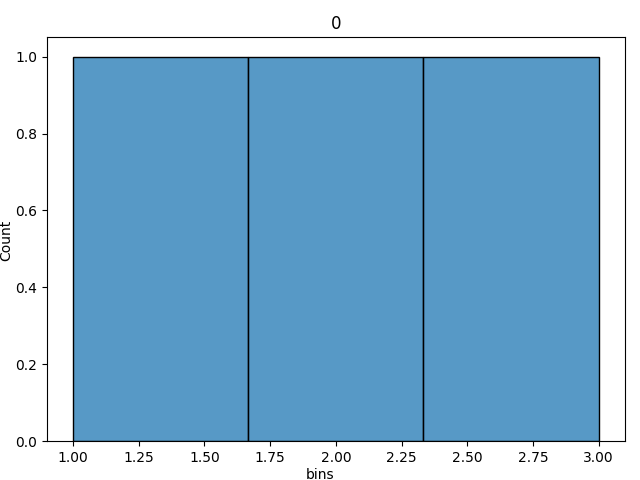
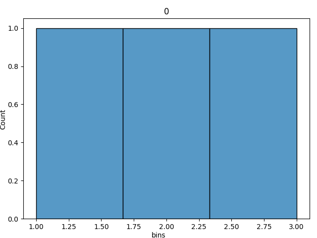

Graphs¶
Graph Your Data¶
We can plot some of our data as seaborn histogram plots. Below will demonstrate how to do so and provide examples.
The following plots are currently available to work directly with your profilers:
histogram (numeric columns only)
missing values matrix
Below shows how to do so with examples.
What we need to import¶
from dataprofiler.reports import graphs
The main functions that is used to plot histograms are in graphs. You will also need the `dataprofiler[reports]` requirement to be installed:
pip install 'dataprofiler[reports]'
Plotting from a StructuredProfiler class¶
With a StructuredProfiler class variable, we can specify what columns we want to be plotted, and plot them into histograms.
graphs.plot_histograms(profiler, column_names, column_inds)
These are what the variables mean:
profiler - StructuredProfiler class variable that contains the data we want
columns - (Optional) The list of IntColumn or FloatColumn names we want to specifically plot. If specified, column_inds cannot be specified.
column_inds - (Optional) The list of IntColumn or FloatColumn indexes we want to specifically plot. If specified, column_names cannot be specified.
Additionally, we can also plot the missing values matrix for a StructuredProfiler:
graphs.plot_missing_values_matrix(profiler, ax, title)
These are what the variables mean:
profiler - StructuredProfiler class variable that contains the data we want
ax - (Optional) MatPlotLib Axes to plot the matrix within.
title - (Optional) The title of the axes we want to define.
Plotting an individual IntColumn or FloatColumn¶
With a column’s Int or Float profile, we can plot their respective histograms.
graphs.plot_col_histogram(column, axes, title)
These are what the variables mean:
column - The IntColumn or FloatColumn we want to plot
axes - (Optional) The MatPlotLib Axes to plot the histogram within.
title - (Optional) The title of the axes we want to define.
Additionally, we can also plot the missing values bargraph for any column profile:
graphs.plot_col_missing_values(profiler, ax, title)
These are what the variables mean:
profiler - The StructuredColProfiler we want to plot
ax - (Optional) MatPlotLib Axes to plot the matrix within.
title - (Optional) The title of the axes we want to define.
Examples¶
Histograms¶
This example demonstrates how we can take a StructuredProfiler class and plot histograms of the specified columns.
import dataprofiler as dp
from dataprofiler.reports import graphs
data = [[1, 'a', 1.0],
[2, 'b', 2.2],
[3, 'c', 3.5],
[None, 'd', 10.0]]
profiler = dp.StructuredProfiler(data)
# This will plot all IntColumn and FloatColumn as histograms (The first and last column).
fig = graphs.plot_histograms(profiler)
fig.show()
# This will only plot the specified column, 0.
columns_names = [0]
fig = graphs.plot_histograms(profiler, columns_names)
fig.show()
 

This example demonstrates how we can plot a low level profiler.
import pandas as pd
from dataprofiler.profilers import IntColumn
from dataprofiler.reports import graphs
data = pd.Series([1, 2, 3], dtype=str)
profiler = IntColumn('example')
profiler.update(data)
# Plot the axes
ax = graphs.plot_col_histogram(profiler)
# get and show the figure of the plotted histogram
fig = ax.get_figure()
fig.show()
Missing Values Matrix¶
This example demonstrates how we can take a StructuredProfiler class and plot a missing values matrix.
import dataprofiler as dp
from dataprofiler.reports import graphs
data = pd.DataFrame(
[[None, '', 1.0, '1/2/2021'],
[3, None, 3.5, ''],
[1, None, 1.0, '2/5/2020'],
[None, 1, 10.0, '3/5/2020']],
columns=['integer', 'str', 'float', 'datetime'],
dtype=object
)
profiler = dp.StructuredProfiler(data)
# This will plot the missing values matrix for all columns.
fig = graphs.plot_missing_values_matrix(profiler)
fig.show()
This example demonstrates how we can plot barchart of a column’s missing values.
import pandas as pd
from dataprofiler.profilers.profile_builder import StructuredColProfiler
from dataprofiler.reports import graphs
data = pd.Series([1, 2, 3, None, None, 4], name='example', dtype=str)
profiler = StructuredColProfiler(data)
# Plot the axes, can be a list of multiple columns
ax = graphs.plot_col_missing_values([profiler])
# get and show the figure of the plotted histogram
fig = ax.get_figure()
fig.show()